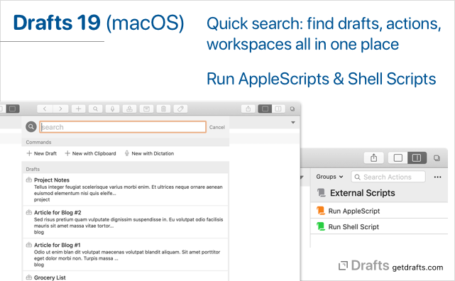

Drafts 19 (macOS) has been released in the Mac App Store, details below.
See also: iOS Release Notes

What’s New
-
Quick Search: Global quick search feature to query for drafts, actions, workspaces and common commands in one place.
- Accessed via search button in the toolbar, the
Edit > Find > Quick Searchmenu command, or with the shift-command-F keyboard shortcut. -
/quickSearch?query=URL action to open directly to quick search. Details -
app.showQuickSearch(initialQuery)scripting function. Docs - Related change: Searches (in quick search and in draft list) now support tag matches in additional to full text searching, in addition to their support for
"exact phrase"with quotes and-omissionwith hyphen - Quick Search feature requires macOS 10.15.1 (Catalina) or greater.
- Documentation
- Accessed via search button in the toolbar, the
-
AppleScript
- “Run AppleScript” action step can be used to execute AppleScripts passing information about the current draft.
-
AppleScriptscript object for calling AppleScripts from JavaScript, with more advanced control of parameters, subroutines called, and easier access to return values. - Basic incoming AppleScript support for creating new drafts. Additional support for AppleScript coming in future updates. Example:
tell application "Drafts" make new draft with properties {content: "my draft", tags: {"blue", "green"}} end tell - AppleScript examples action group
- More info and examples
-
ShellScriptscript object for running Unix shell scripts from Drafts script action steps, with the ability to pass command line arguments, and access standard output and errors. -
Marked app streaming preview support. If enabled in
Preferences > General, the editor will live update the stream Marked watches in it’s “Streaming Preview” window. Requires Marked app be installed. Details -
FileManagerscript object additions:-
baseURLandbasePathproperties return fullfile:///URL or POSIX path to the base directory used by the FileManager instance. This can be useful in cases where the full location of files is needed. -
writeJSON(path, obj)andreadJSON(path)convenience functions for saving and restoring JavaScript objects in files. FileManagerdocs
-
-
app.showDraftInfo(draft?)function to display details of a draft. Docs - Additional
Workspacescript object properties:-
loadActionListGroup(ActionGroup) -
loadActionBarGroup(ActionGroup) -
loadFolder(“inbox”, “archive”, “trash”, “flagged”) - Docs
-
Other Changes
- Fix: Better live updating of changes if the same draft is open in multiple windows.
- Fix: Changing only some advanced settings in the action editor, and nothing else, could result in the change not being saved.
- Fix: “-” button for deleting actions in action manager did not work properly with multiple selections.
- Change: Searches now also search tag names in addition to searching full text.
- Fix: “Manage Actions” window did not behave properly in full screen mode.
- Fix: Several crashes related to open and closing additional drafts windows when the app first launched.
- Change: Improve identification of HTML tags in Markdown syntax.
- Misc. other reliability and performance improvements.
For a complete history of updates, visit the changelog